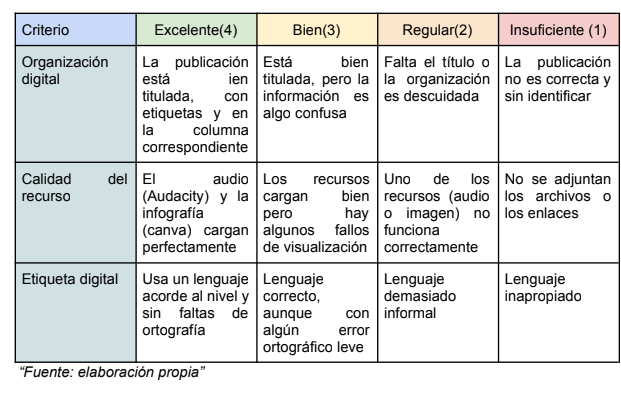
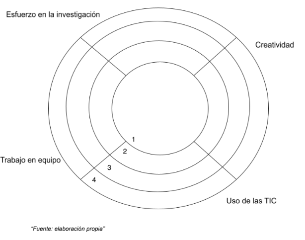

¿Cómo vamos a evaluar nuestro trabajo?
En este proyecto, la evaluación no es solo una nota final; es una forma de aprender y mejorar. Para que seáis consciente de qué estáis haciendo bien y en qué podéis esforzaros un poquito más. Para ello haremos uso de dos herramientas de evaluación:
1. Rúbricas de aprendizaje (Podcast y Padlet)
Aquí podéis consultar qué puntuación tendrá cada parte de vuestro trabajo. Fijaos bien en los colores:
Verde (4 puntos): Excelente
Amarillo (3 puntos) : Muy bien, vas por buen camino
Naranja (2 puntos) : ¡Ánimo! Puedes mejorar algunos detalles
Rojo (1 punto): Necesitas esforzarte más en este apartado

Rúbrica para Padlet

2. Diana de autoevaluación
Al final del proyecto, cada uno de vosotros rellenará su propia "Diana". Cuanto mas cerca estéis del número 4 (el centro), ¡más cerca estaréis de la diana del éxito! Para ello, le daréis color a cada habilidad que se representa en la diana.
